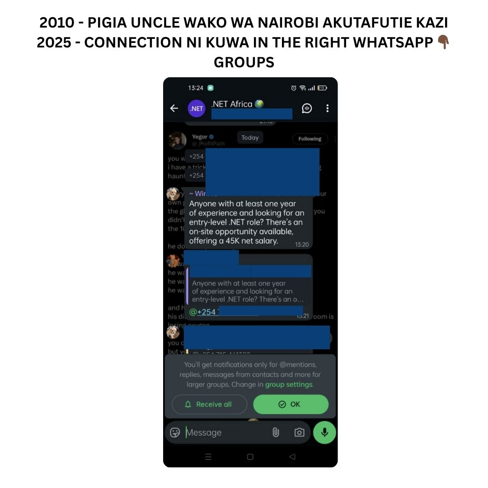
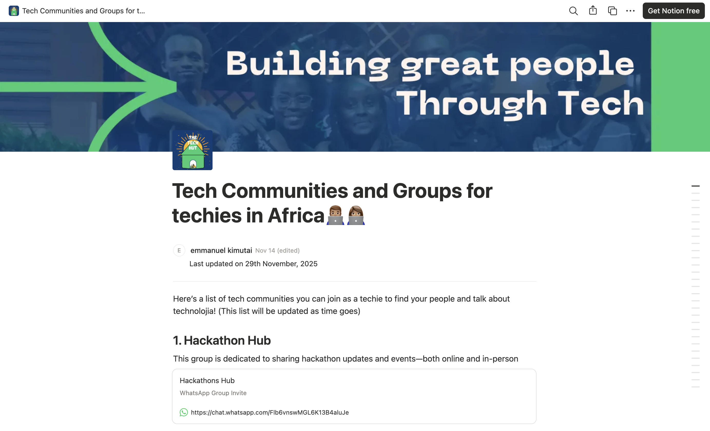

Stop spending hours searching. Get a vetted list of 50+ active professional tech groups across Africa, with direct links to join them, and start seeing tech opportunities every day.
One-time purchase · lifetime updates included
The African tech ecosystem is booming, but finding the right, active community to join is difficult. We solved it for you.
It is a curated, categorised and verified database rather than a bare list. We have done the searching, so you can go straight to connecting, learning and earning.
Find groups for Python, JavaScript, data science, product management, design and any other niche technology stack or professional role.
One-click links to join groups on Slack, Discord, Telegram and WhatsApp, with no complicated application processes.
Whether you are in the capital, a major city or working remotely, find local networks to expand your reach within the country.
The tech world changes fast. Your one-time purchase includes future updates as new, valuable communities emerge.
The database is sortable and filterable. Here is what it looks like, plus a short screen recording of it in use.


We actively scout the country for the best new tech groups and update the database with verified links bi-weekly. Your access never expires.
One payment and the searching is done. 38 people have bought it so far.